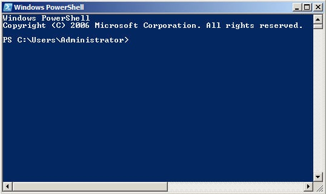

PowerShell Essentials for SysAdmins
PowerShell is essentially a scripting language and shell (command prompt) that you can use on Windows systems. It’s basically Microsoft’s way of getting a powerful UNIX/Linux/Mac-like shell on the Windows platform (long overdue!). The first versions of PowerShell were pretty horrific, but it’s come a long way since then. PowerShell v4 and later is pretty decent (Win10 comes with PowerShell v5). Luckily, PowerShell v4 comes with Windows Server 2012, and since this post is geared towards sysadmins, I’ll focus everything on Windows Server 2012.
1. PowerShell Basics
When you open up PowerShell (it’s next to your Start button on the taskbar in Windows Server 2012), you’ll get a PS prompt where you can type commands:

It’s important to note that most DOS commands will work fine within a PowerShell window - try these for example:
cls
echo Hello World
cd \
copy c:\windows\system32\calc.exe C:\
mkdir C:\stuff
ipconfig > lala.txt
notepad lala.txt
ipconfig ; dir ; date
However, some DOS commands will not work - specifically those that interface directly with the OS as there is a PowerShell equivalent of doing that:
path <–Doesn’t work!
$env:Path <–This is the way to call the PATH environment variable in PowerShell
Commands in PowerShell are called cmdlets, and have an action-object naming convention (e.g. Get-Help). And just like DOS, commands are case-insensitive, and the Tab key will auto-complete commands/paths as you type them in (in PowerShell, the Tab key will also auto-complete command options!).
Other features of PowerShell mimic those in a UNIX/Linux/Mac shell (such as BASH). For example, output from one command can be piped to another command for processing data, or formatting/reducing output:
Get-host
Get-host | Format-List version
Get-host | fl version
Get-host | ft version
Similarly, cmdlets can have aliases to them to save typing. For example, help is an alias to the cmdlet Get-Help. Try these out:
Get-alias
Get-alias –name f
Get-alias –definition Format-List
Get-alias –definition Get-Alias
alias <– Same as gal / Get-Alias (UNIX style)
ls <– Ditto
To get a list of cmdlets and help on those cmdlets, you could try these:
Get-Command
Get-Command | more
Get-Command | Measure-Object –line
Get-Help Measure-Object
However, if you come from a UNIX/Linux/Mac environment, not everything will work as expected since PowerShell is an additional component to the Windows OS (not an underlying component) - as a result, cmdlets must explicitly be written to support every possible operation. For example, let’s take the Select-String cmdlet (which is equivalent to UNIX grep):
Get-host | fl version | select-string -pattern “4.0“ <–BAD!
dir –r C:\Stuff | sls “space“ <– create text file with space in it under C:\Stuff
2. PowerShell Providers & Members
PowerShell has different “dimensions” that it can work with like drive letters - for example, Filesystem (default), certificates, registry, etc. Each dimension is called a PowerShell provider and is treated like a DOS drive letter. Try the following out:
Get-PSProvider
Get-PSDrive
gdr
Set-Location alias:
dir (or gci)
sl cert:
dir
sl HKCU:
dir
cd Software
dir
cd Google
dir
sl c:
dir
dir -Force
Remove-Item C:\directory –Recurse
Everything within a PowerShell provider (files, directories, certificates, registry keys, etc.) are treated as member objects, and each object has properties. You can simply pipe objects to Get-Member (gm) to see these properties, as well as use Get-ItemProperty (gp) and Set-ItemProperty (sp) to view and change them. Try this out:
gci somefile
gci somefile | gm
gp somefile
gp somefile | fl CreationTime
sp somefile CreationTime <--put in some date when prompted (e.g. 1/1/2016)
gci C:\Stuff -Recurse | where {$_.LastWriteTime –gt "02/01/2016"}
Here is some extra stuff to drill in how object-oriented PowerShell really is:
$a = gci somefile
$a
$a.isreadonly
$itunes = new-object -com itunes.application <--install iTunes first & add song
$itunes.play()
$itunes.stop()
$itunes | gm
$ui = (Get-Host).UI.RawUI
$ui.WindowTitle = "Extreme PowerShell Window!"
3. Useful Cmdlets for Daily System Administration
Although most Windows sysadmins typically RDP into a server to administer it graphically, there are a few tasks that save you time if you do them in PowerShell! Here are some of my favorites by topic area (try them out for yourself to see how cool they are):
Network Admin cmdlets:
Test-NetConnection
Test-NetConnection triosdevelopers.com –Traceroute
Test-NetConnection triosdevelopers.com –Port 443
Get-NetIPConfiguration
Get-NetAdapter
Get-NetAdapterStatistics
New-NetIPAddress –InterfaceAlias Ethernet –IPAddress 192.168.1.50
–PrefixLength 24 –DefaultGateway 192.168.1.1
Set-DNSClientServerAddress –InterfaceAlias Ethernet
–ServerAddresses 8.8.8.8
Set-NetFirewallProfile –profile domain,public,private –Enabled false
New-NetFirewallRule –DisplayName “Allow Inbound 80 TCP”
–Direction Inbound –Localport 80 –Protocol TCP –Action Allow
System Admin cmdlets:
gwmi Win32_ComputerSystem
Get-Service | ogv <– Out-Gridview
Restart-Service dnscache <– also stop/start/set-service
ps | sort –property cpu | select –last 5 <-- ps = get-process
Stop-process –name iTunes
Rename-Computer name
Restart-Computer (pipe text file with names to cmdlet to reboot many computers)
Stop-Computer
Add-Computer –DomainName domain.com
Test-ComputerSecureChannel
Test-ComputerSecureChannel –credential domain\administrator –Repair
Get-WindowsFeature | ogv
Install-WindowsFeature –IncludeAllSubfeature
–IncludeManagementTools web-server
Install-WindowsFeature Net-Framework-Core –Source e:\sources\sxs
Get-Hotfix | ogv
VM (2012/8+) cmdlets:
copy X:\2012Template.vhdx X:\VMs\2012VM.vhdx
New-VM –MemoryStartupBytes 4096MB –Name 2012VM –Path “X:\VMs”
–VHDPath “X:\VMs\2012VM.vhdx” (existing VHDX file sysprepped)
Get-VM –Name 2012VM | Get-VMNetworkAdapter | Connect-VMNetworkAdapter
–Switchname “External Network”
AD Administration cmdlets:
Search-ADAccount –PasswordNeverExpires | ogv
Get-ADForest domain.com | FT SchemaMaster
Get-ADDomain domain.com | FT PDCEmulator
Move-ADDirectoryServerOperationsMasterRole –Identity NewDCName
–OperationsMasterRole SchemaMaster,RIDMaster -Force
Remote management cmdlets (best when run as a Domain Admin within a domain environment):
Restart-Computer –Force –ComputerName exchange.lala.com
Enter-PSSession targetmachine
Invoke-Command -Computername machine1, machine2
-Filepath c:\Script\script.ps1
Note that remote management requires winRM (started by default in Windows Server 2012) - if it is not enabled, you could run winrm -quickconfig, or one of the following:
Set-Service winrm –StartupType automatic
Enable-PSRemoting –Force
4. PowerShell Scripts
Any of the cmdlets discussed previously could be placed into a PowerShell script and executed on the system. However, you must first make sure that your execution policy allows for script execution by executing the Get-ExecutionPolicy cmdlet. Here is a description of the different policies:
- Restricted (disabled - default on clients)
- AllSigned (all scripts must be signed)
- RemoteSigned (all scripts downloaded from the Internet must be signed - the default on Windows Server 2012)
- Unrestricted (all scripts run, you’re prompted to continue for unsigned Internet scripts)
- Bypass (all scripts run)
If you wanted to allow all scripts to run, you could execute Set-ExecutionPolicy Unrestricted (this can also be set with a GPO in a domain to hit multiple computers).
PowerShell scripts are simply text files with a .ps1 extension - they can be edited in Notepad, but the default editor application for them is PowerShell Integrated Scripting Environment (ISE),which colour codes different parts of the script (useful for testing).
To execute a script that you created from a PowerShell prompt, simply specify the relative or absolute path to the script - for example:
./myscript.ps1
.\myscript.ps1
c:\myscript.ps1
You can also execute PowerShell scripts outside PowerShell (e.g. within a task in Task Scheduler) by calling the PowerShell interpreter first - for example:
PowerShell.exe c:\myscript.ps1
As long as you can read (trace) a PowerShell script, you can copy & modify scripts on the Internet to suit your needs! The scripts you create can be basic ones that perform a series of tasks using DOS commands or PowerShell cmdlets (much like a simple batch file):
#Remove logs from the night before
del \\server1\archive\acctlog_sorted.txt
#Sorts acclog.txt, removes any duplicate lines, and saves it to acclog_sorted.txt.
$TextFile = "C:\LogStorage\acctlog.txt"
$NewTextFile = "C:\LogStorage\acclog_sorted.txt"
Get-Content $TextFile | Sort-Object | Get-Unique > $NewTextFile
#Copy unique sorted accounting log over to archive
xcopy /s/e/v C:\LogStorage\acctlog.txt \\server1\archive
#Remove old accounting logs
del c:\LogStorage\acclog_sorted.txt
del c:\LogStorage\acclog.txt
Or it could use more complex programming constructs (if, switch, for foreach, while, until, functions, and so on):
#This script uses the .NET method to ping servers listed in the
#$arrayComputer array #variable – if the computer is pingable, it
#renames the Administrator account to bob.
$arrayComputer = "10.3.101.2","10.3.101.3","10.3.101.4"
foreach ($strComputer in $arrayComputer) {
$ping = new-object System.Net.NetworkInformation.Ping
$Reply = $ping.send($strComputer)
if($Reply.status -eq "success")
{
$admin=[adsi]("WinNT://" + $strComputer + "/administrator, user")
$admin.psbase.rename("bob")
}
}
And, of course, you can write scripts many different ways - here is a very similar script:
#This script uses the .NET method to ping servers for a whole network
#If the computer is pingable, it renames the Administrator account to
#bob and displays total changes.
write-host "Now Pinging IP's ... please be patient"
$ping = New-Object System.Net.NetworkInformation.Ping
$i = 0
1..255 | foreach { $ip = "10.3.101.$_"
$Res = $ping.send($ip)
if ($Res.Status -eq "Success") {
$admin=[adsi]("WinNT://" + $ip + "/administrator, user")
$admin.psbase.rename("bob")
$i++
}
}
[string]$i + " Hosts have been modified"
Enough reading! Try the script below out - simply paste it into Notepad, save it as myscript.ps1 and execute it:
""
function WMIDateStringToDate($Bootup) {
[System.Management.ManagementDateTimeconverter]::ToDateTime($Bootup)
}
#Set $Computer to multiple IPs/names to analyze multiple computers
$Computer = "." #adjust as needed to include multiple computers
$computers = Get-WMIObject -class Win32_OperatingSystem –computer $computer
foreach ($system in $computers) {
$Bootup = $system.LastBootUpTime
$LastBootUpTime = WMIDateStringToDate($Bootup)
$now = Get-Date
$Uptime = $now - $lastBootUpTime
$d = $Uptime.Days
$h = $Uptime.Hours
$m = $uptime.Minutes
$ms= $uptime.Milliseconds
"System Up for: {0} days, {1} hours, {2}.{3} minutes" -f $d,$h,$m,$ms
}
""
5. Getting Comfy with PowerShell
On a final note, there are two things that you’ll want to do to make PowerShell a bit more personal for you. The first thing is to create a custom PowerShell console file that has the extension .psc1 using the following:
Export-Console lala (creates lala.psc1)
Simply double-click the lala.psc1 file to open PowerShell. Next, customize your window settings to your liking (colour, size, layout, etc.). Your customizations are saved to the lala.psc1 file automatically and will be there next time you double-click on it!
The second thing you’ll want to do is enable and use your PowerShell profile. A PowerShell profile is simply a PowerShell script that automatically executes when YOU open PowerShell (sort of like .bash_profile in Linux or .profile on UNIX). It is stored in your user profile (e.g. C:\Users\bob\Documents\WindowsPowerShell\Microsoft.PowerShell_profile.ps1), and is great for storing custom aliases and functions that make your coding a lot easier!
First, create your PowerShell profile:
New-Item –path $profile –itemtype file -force
Next, edit your profile:
notepad $profile
And add the following contents (save your changes when finished):
Write-host “Greetings Professor Falken"
Set-alias c clear-host
Function pro {write-host “Editing PS Profile”; start-sleep –s 2;
notepad $profile}
Close your PowerShell window, open it again, and notice the greeting! Try typing c and pro to test your alias and function.